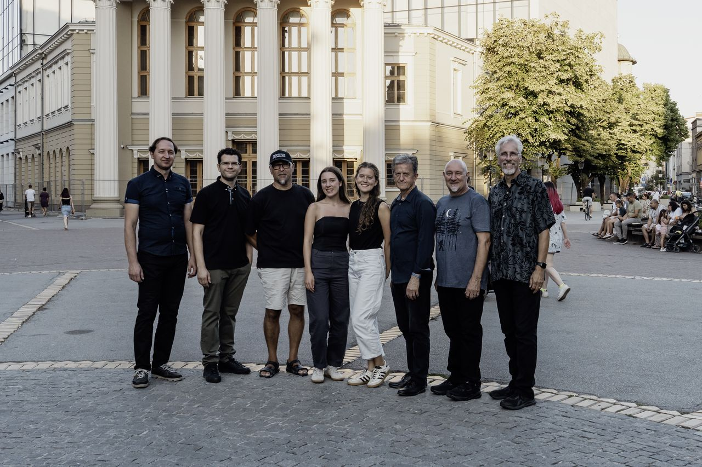
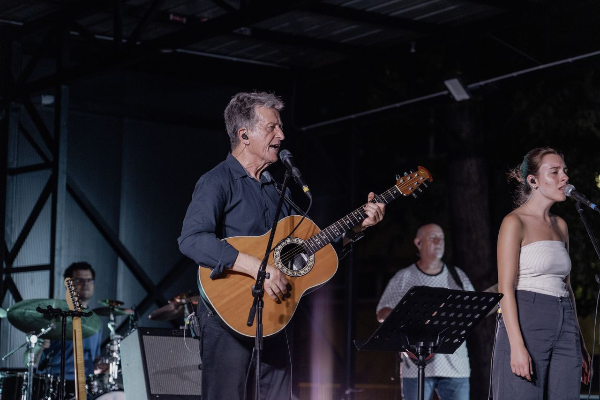
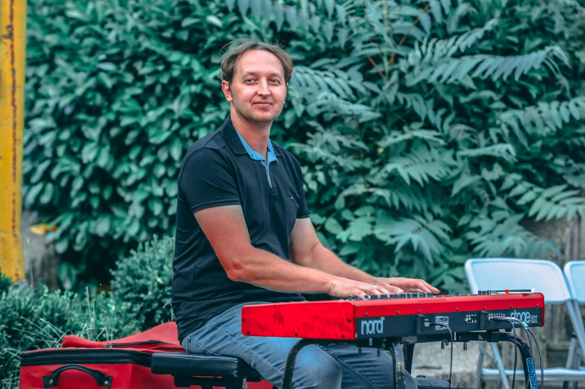
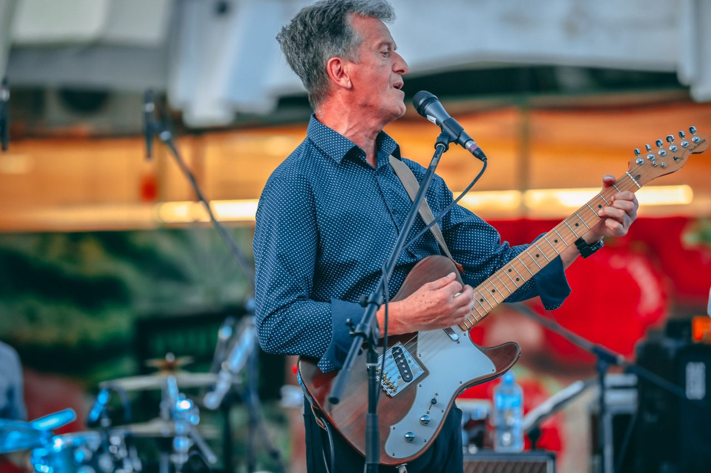
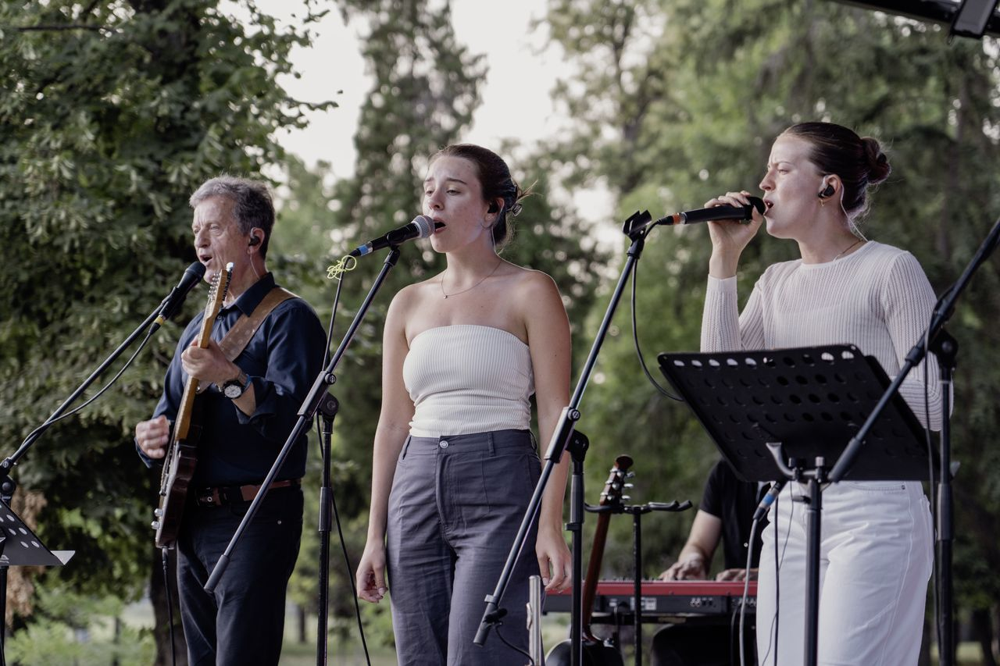
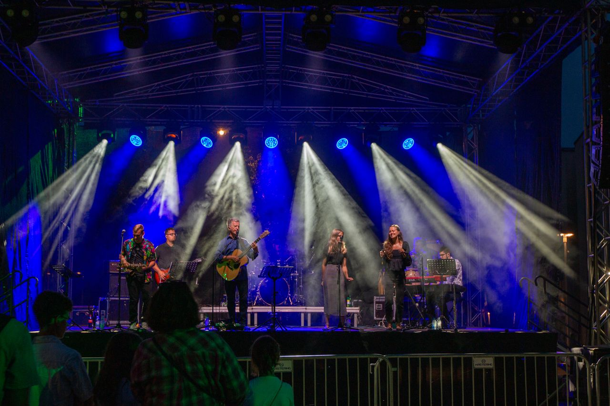
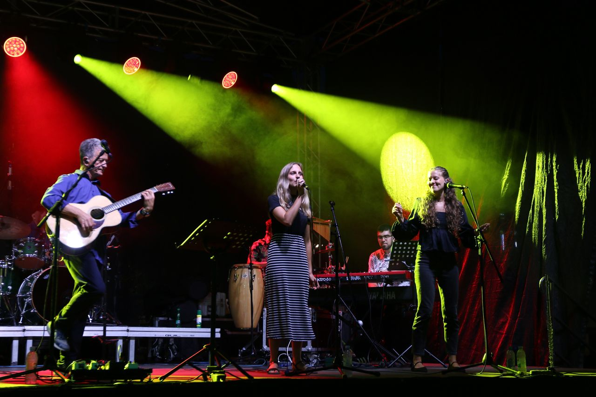
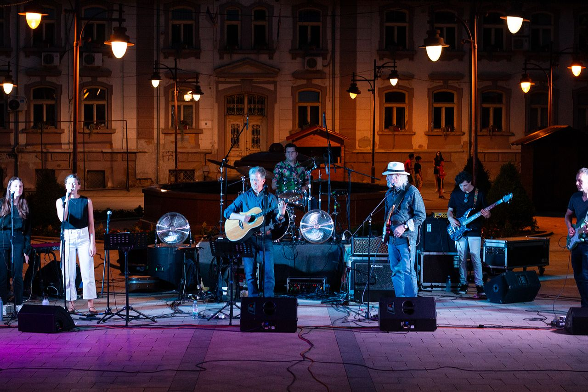
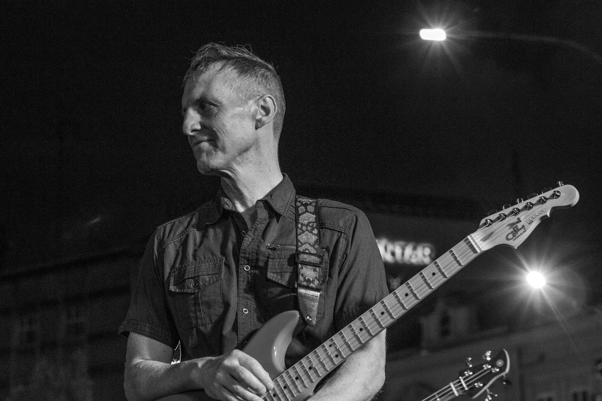

Udruga „Ima Nade" · Od 2001.
ADONAI
Glazba koja nosi poruku ljubavi, nade i mira.
O nama
Tko smo
Grupa ADONAI je glazbeni sastav koji djeluje u okviru udruge građana „Ima Nade", koja od 2001. godine u Republici Hrvatskoj promiče kulturu, etiku i duhovnost temeljenu na kršćanskim vrijednostima. Tijekom godina band ADONAI organizira glazbene turneje s ciljem prenošenja poruke ljubavi, nade i mira.
Koncerti
Najave i turneje
Pratite gdje ADONAI nastupa. Novi termini objavljuju se ovdje.
| Datum | Grad / mjesto | Lokacija | Ulaznice |
|---|---|---|---|
| 15.–30.07.2026. | Turneja po gradovima Srbije | Open Air Tour „Ima Nade!“ | Najava |
Poslušaj i pogledaj
Glazba i galerija
Poslušajte
Izbor pjesama grupe ADONAI. Kliknite na reprodukciju.
Galerija









Kontakt
Javite nam se
Za pozive na koncerte, suradnju ili pitanja — slobodno nam pišite.
Doniraj
Podržite naš rad
Vaša donacija pomaže grupi ADONAI i udruzi „Ima Nade" u organizaciji koncerata i turneja te u širenju poruke ljubavi, nade i mira.
DonirajHvala na svakoj podršci. 🙏